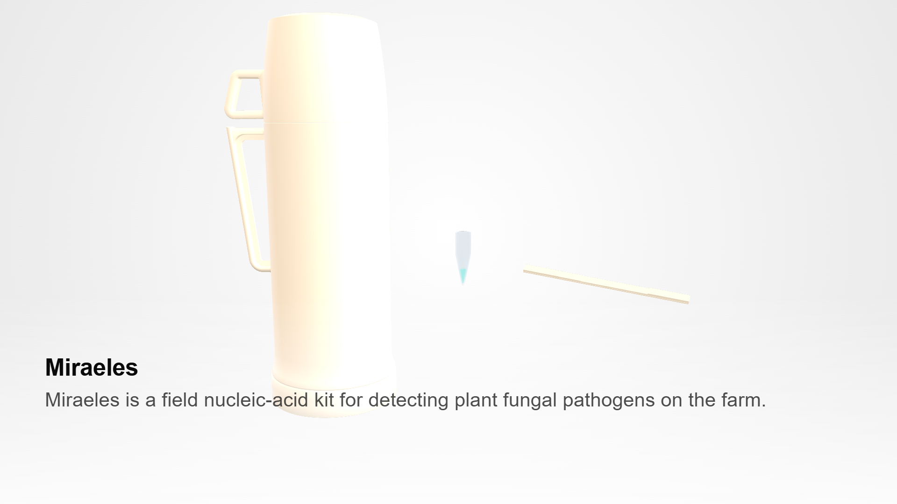
Miraeles is a field nucleic-acid kit for detecting plant fungal pathogens on the farm.
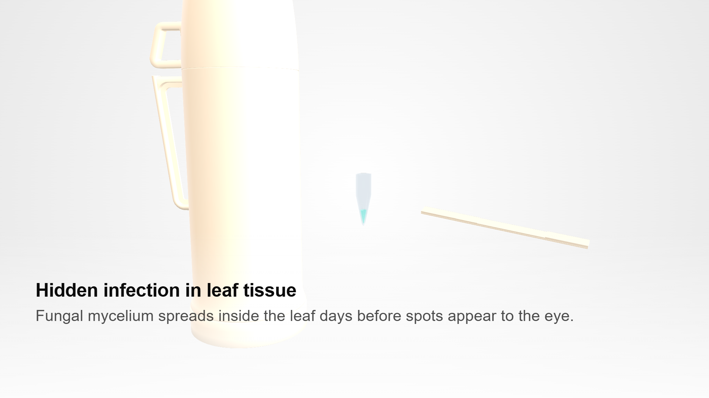
Fungal mycelium spreads inside the leaf days before spots appear to the eye.
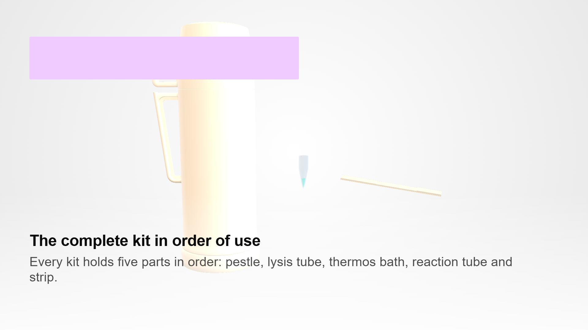
Every kit holds five parts in order: pestle, lysis tube, thermos bath, reaction tube and strip.
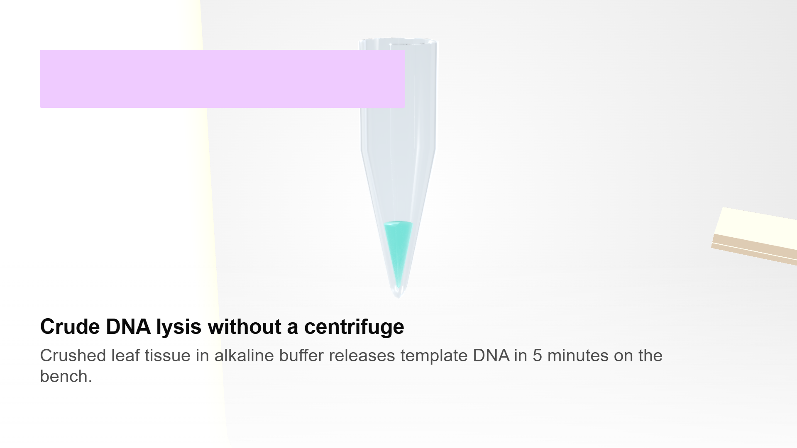
Crushed leaf tissue in alkaline buffer releases template DNA in 5 minutes on the bench.
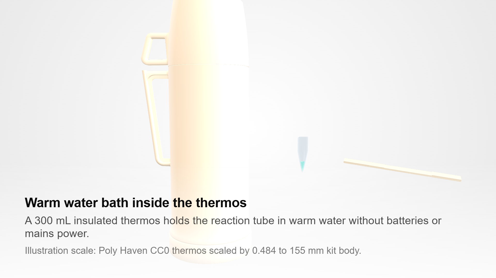
A 300 mL insulated thermos holds the reaction tube in warm water without batteries or mains power.
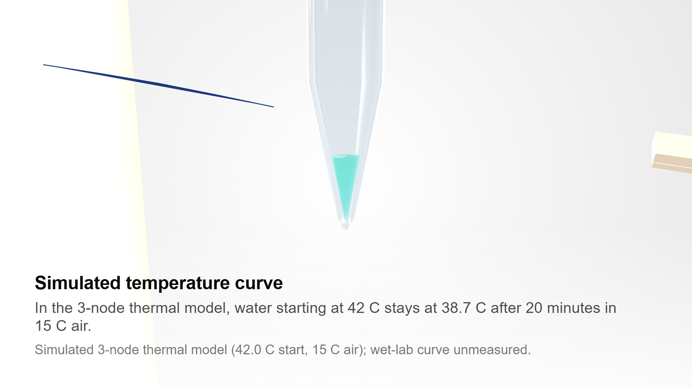
In the 3-node thermal model, water starting at 42 C stays at 38.7 C after 20 minutes in 15 C air.
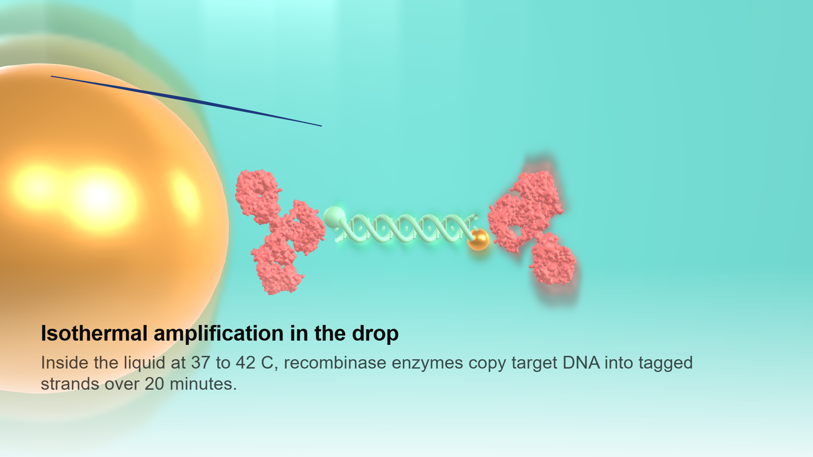
Inside the liquid at 37 to 42 C, recombinase enzymes copy target DNA into tagged strands over 20 minutes.
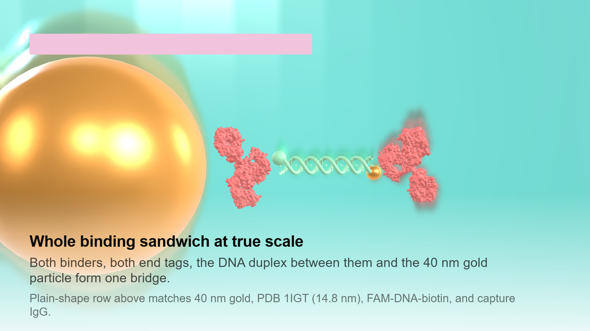
Both binders, both end tags, the DNA duplex between them and the 40 nm gold particle form one bridge.
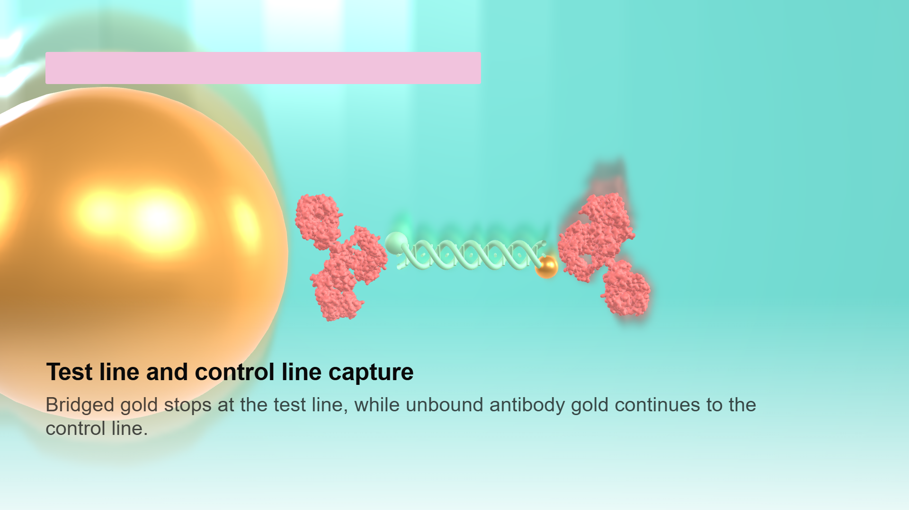
Bridged gold stops at the test line, while unbound antibody gold continues to the control line.
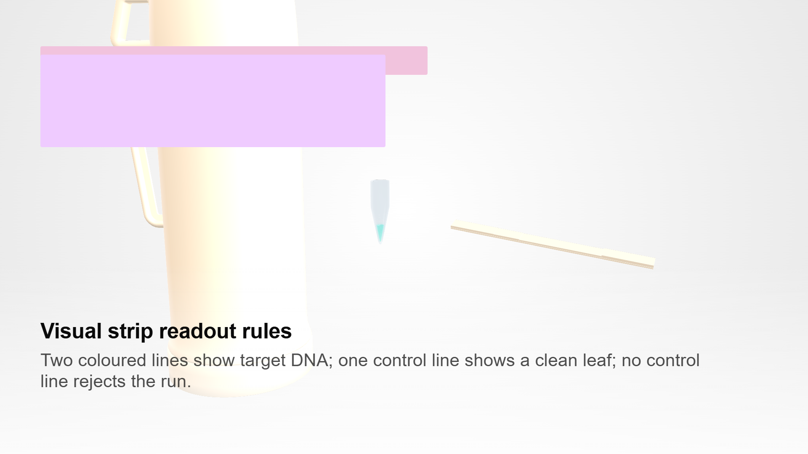
Two coloured lines show target DNA; one control line shows a clean leaf; no control line rejects the run.
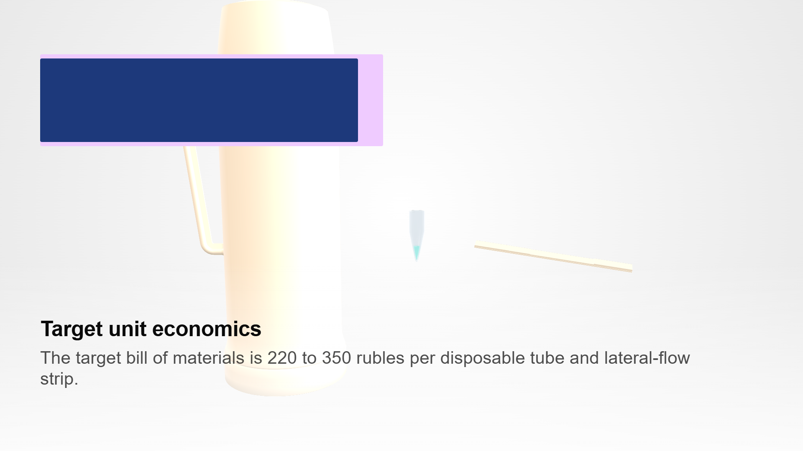
The target bill of materials is 220 to 350 rubles per disposable tube and lateral-flow strip.
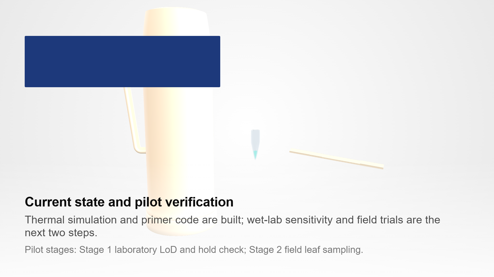
Thermal simulation and primer code are built; wet-lab sensitivity and field trials are the next two steps.